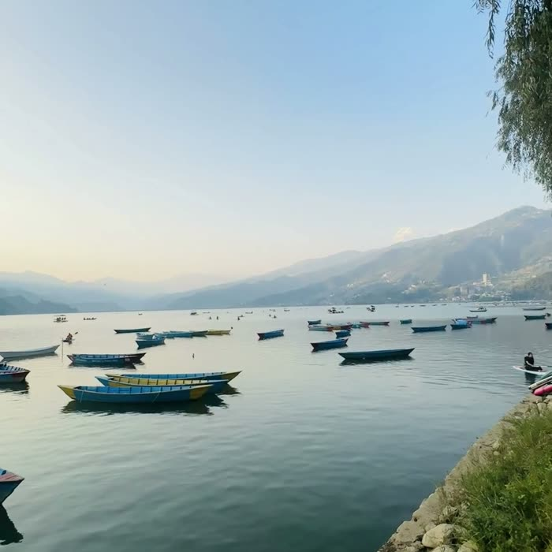

Core · available now
Lake Edition
Lakeside Pokhara: cafés, coworking, mountains in view. The easy yes, and the right first stay if you have not been to Nepal before.
- Private room, fibre wifi, backup power
- Coworking desk
- One guided Poon Hill trek a month
- Clearest views Oct–Nov and Mar–May